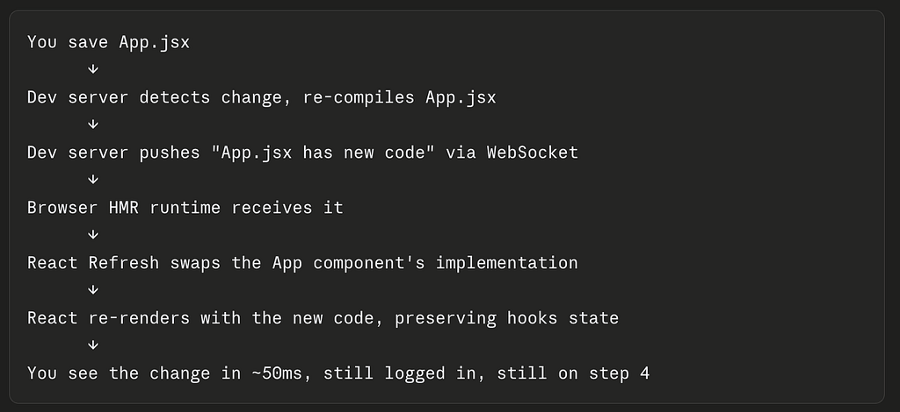

Frontend Revisited
A Developer’s Fresh Take on Modules, React, Bundlers and Micro-frontends
By Arunkumar Velusamy · May 2026
Browser’s progress over the years
25–30 years ago, browser just opens HTML and reloads entire page for any change… like a document viewer. But it evolved from this.
When a browser loads HTML, it parses it into a DOM(Document Object Model) tree in memory. It also builds a CSSOM(CSS Object Model) from styles, and combines both into a render tree. JavaScript can modify the DOM at runtime, and the browser efficiently updates only the affected parts of the page through reflow and repaint.
What Javascript can actually do to a loaded page?
- Modify structure
- Modify styling
- Fetch new data without reloading
- Change the URL without reloading
- Handle real-time data (Web sockets, SSE(Server Sent Events), push notifications)
- Store data locally
Single Page application Vs Multi Page Application vs Micro-frontends
SPA (Single-page application) loads index.html exactly once, and everything after that happens via JavaScript updating the DOM — no full page reloads.
Multi-page application(MPA) — Every navigation triggers a full server round-trip that returns a new HTML document.
Micro frontends apply microservices philosophy to the frontend. In a micro frontend approach, each section becomes its own app, owned by a separate team, deployed independently, then composed at runtime or build time into a unified user experience.
node.js vs node module vs node_modules folder
- Node.js is a JavaScript runtime that runs outside the browser.
- A “Node module” (or just “module”) is a reusable piece of JavaScript code — one file, or a package of files, that exports functionality for other code to import.
- a. Built-in (core) modules
- b. Local modules
- c. Third-party modules (npm packages)
- node_modules/ — is the directory where npm installs third-party packages.
npm registry
The npm registry is a public database of JavaScript packages — essentially a giant server that stores published packages and serves them to anyone who runs “npm install”.
Create React App (CRA)
The official zero-config React scaffolding tool — now effectively deprecated. Migrate to Vite (most common path).
Build tool / dev server
- Build tool — transforms your source code into something browsers can run.
- Dev server — serves your app locally during development.
Most modern tools handle both, but they’re separable concerns. Vite is the current default for new projects.
For instance, App is written in React (runtime dep), bundled with Vite (dev dep), and uses Vite’s React plugin plus the federation plugin.
React library or framework
React is a library. Specifically, a UI rendering library. It does one thing: turn state into DOM.
Other hints
React is a runtime library that runs in the browser (or on a server for SSR(Server Side Rendering))
JSX file
A .jsx file is a JavaScript file that contains JSX syntax — an extension to JavaScript that lets you write HTML-like markup directly inside your code. It’s almost exclusively used with React.
JSX is neither a React feature nor a JavaScript feature — it’s a separate syntax extension.
JSX was created by Facebook alongside React (2013), but it’s a standalone syntax specification
It’s not part of JavaScript (ECMAScript). The JS engine in your browser cannot run JSX directly — it would throw a syntax error.
It’s not part of React either. React doesn’t know what JSX is at runtime.
How it actually works? — JSX needs a compiler (Babel, TypeScript, SWC, esbuild) to transform it into plain JavaScript before it runs
Create React App (CRA), which bundles a preconfigured toolchain:
- Bundler — webpack 5
- JSX/ES compiler — Babel (via babel-loader)
- Babel preset for JSX — @babel/preset-react
- Babel preset for modern JS — @babel/preset-env
Plain JS vs JSX
Without JSX (pure JavaScript):
React.createElement('h1', { className: 'title' }, 'Hello')
With JSX:
<h1 className="title">Hello</h1>
Both produce the same result. JSX gets compiled (by Babel or similar) into React.createElement(...) calls.
HMR: Hot Module Replacement
Hot Module Replacement (HMR) is a development-only feature. It updates modules in a running application without a full page reload — and critically, without losing application state.

Bundler
A bundler (Webpack, Vite, esbuild, Rollup, Turbopack, Parcel) is a build-time tool that runs on your machine or CI before the code ever reaches a browser.
Vite dev servers
three separate Vite dev servers that the browser stitches together at runtime
Module Federation
A Webpack 5 feature that lets separately deployed JavaScript applications share code at runtime — without bundling everything together at build time.
In a micro-frontend architecture, you have multiple independent apps. Without module federation
- Each app bundles its own copy of React, lodash, etc. → massive duplication
- Sharing code means a monorepo or npm package → tight coupling, slow deploys
- One team can’t update a component without coordinating a release with everyone
Core Idea is each app can act as:
- A Host — consumes code from others at runtime
- A Remote — exposes code for others to consume
- Both simultaneously
homepage in package.json
CRA uses homepage to derive PUBLIC_URL, which tells the build where assets will live in production.
package.json vs package-lock.json
- package.json — your declared intent, written by you, committed, flexible with version ranges.
- package-lock.json — npm’s snapshot of exactly what was installed, auto-generated, always committed, never hand-edited. Every transitive dependency — dependencies of your dependencies — is pinned to an exact version with a checksum.
Export with default vs without default
There are 3 ways to import
- Default export — one per module, imported with any name
- Named export — multiple per module, imported by exact name
- Mix both — We can Mix Both
Use named exports by default. Reach for a default export only when a module has one clear primary thing to export (a class, a React component, a config object) and the name flexibility is genuinely useful.
Backend call style
goes through an Express proxy (setupProxy.js)
Direct axios calls to localhost:8010/api/* with bearer token
ES modules(ESM)
ES modules (ESM) is the official JavaScript module system, standardized in ES2015 (ES6). It lets you split code across files and share code via import/export.
CommonJS vs ES Modules
ESM is the future and the standard across browsers and Node.js. CJS is still dominant in the Node ecosystem due to legacy, but new projects should default to ESM.
Hooks
Think of hooks as a way to attach persistent state and behavior to what is otherwise a stateless function.
Hooks: useState
The most fundamental hook. It lets a component remember a value across renders.
Hooks: useEffect
Fetching data from an API,Setting up subscriptions (WebSockets, event listeners),Manually manipulating the DOM,Logging & Setting timers.
Hooks: useEffect
It lets you cache the result
Other Hooks
useRef, useCallback,useContext, useReducer, useTransition, useDeferredValue, useOptimistic, useFormStatus, useLayoutEffect, useSyncExternalStore